Mission 3
KDou est une entreprise française qui s'intéresse maintenant à ses produits les plus vendus selon la catégorie, le fournisseur...
Pour mener à bien cette mission, KDou nous a fourni la base de données recensant tous les produits, commandes, catégories... vous pouvez trouvez le schéma relationnel.
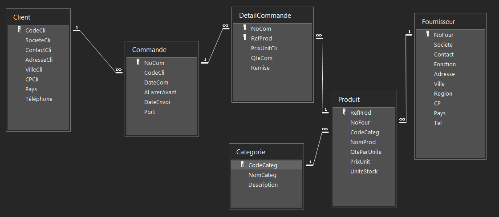1. Desserts et boissons
Deux indicateurs permanents pour les produits de la catégorie boissons et dessert sont :
- Les pays de provenance des catégories desserts et boissons
- Le chiffre d'affaire généré par catégorie desserts ou catégorie boissons.
- Le premier indicateur nous permettra de savoir d'où viennent principalements les desserts et boissons.
- Le deuxième indicateur permettra d'afficher le chiffre d'affaire de KDou généré par catégorie desserts ou boissons.
Construction des requêtes
- Pour obtenir les pays de provenances des catégories boissons et desserts, nous devrons prendre, en joignant les tables Catégorie, Produit et Fournisseur qui ont un code catégorie qui correspond à celui des desserts ou des boissons.
- Pour obtenir le chiffre d'affaires, nous devrons d'abord calculer le chiffre d'affaires des desserts puis le chiffre d'affaires des boissons en faisant : Prix du produit * quantité pour chaque article commandé.
Requêtes SQL
SELECT DISTINCT
C.NomCateg, F.Pays
FROM
(Produit AS P INNER JOIN Categorie AS C ON P.CodeCateg =
C.CodeCateg) INNER JOIN Fournisseur AS F ON P.NoFour = F.NoFour
WHERE
C.NomCateg = 'Boissons' OR C.NomCateg = 'Desserts';
SELECT
CA_B.CA_Boissons, CA_D.CA_Desserts
FROM
(SELECT
SUM(DC.PrixUnitCli * DC.QteCom) AS CA_Boissons
FROM
(Categorie C INNER JOIN Produit P ON C.CodeCateg = P.CodeCateg)
INNER JOIN DetailCommande DC ON P.RefProd = DC.RefProd
WHERE
C.NomCateg='Boissons') CA_B,
(SELECT
SUM(DC.PrixUnitCli * DC.QteCom) AS CA_Desserts
FROM
(Categorie C INNER JOIN Produit P ON C.CodeCateg = P.CodeCateg)
INNER JOIN DetailCommande DC ON P.RefProd = DC.RefProd
WHERE
C.NomCateg='Desserts') CA_D;
Résultats
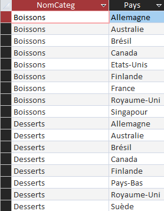
2. L'offre de KDou
Deux indicateurs permanents pour l'offre de KDou sont :
- Le nombre de produits non commandés par catégorie
- Pays avec une offre importante de produit
- Le premier indicateur nous permettra de savoir le nombre de produits non commandés par catégorie.
- Le deuxième indicateur permettra de s'intéresser aux pays avec une offre importante de produit.
Construction des requêtes
- Pour obtenir le nombre de produits non commandés, on doit sélectionner toutes les références produits qui ne sont pas présents dans la table Commande à l'aide d'une différence (on retire tous les articles déjà commandés pour ne garder que ceux qui n'ont jamais été commandés).
- Pour obtenir les pays et leur nombre d'offres de produits, on sélectionne tous les articles de chaque pays, puis on trie les résultats par ordre décroissant (on veut le pays avec le plus de produits).
Requêtes SQL
SELECT DISTINCT
PNC.NomCateg, COUNT(PNC.RefProd) AS Nbr_Produits
FROM
(SELECT DISTINCT
P.RefProd, C.NomCateg
FROM
Produit P INNER JOIN Categorie C ON P.CodeCateg = C.CodeCateg
WHERE
P.RefProd NOT IN
(SELECT
DC.RefProd
FROM
DetailCommande DC)
) PNC
GROUP BY
PNC.NomCateg;
SELECT DISTINCT TOP 5
F.Pays, COUNT(P.RefProd)
FROM
Produit P INNER JOIN Fournisseur F ON P.NoFour = F.NoFour
GROUP BY
F.Pays
ORDER BY
2 DESC;
Résultats
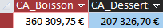3. Provenance des produits
Deux indicateurs permanents pour connaître la provenance des produits sont :
- Les fournisseurs qui vendent uniquement des boissons ou desserts
- Les fournisseurs qui vendent les deux
- Le premier indicateur nous permettra de connaître les fournisseurs qui vendent uniquement des boissons et desserts.
- Le deuxième indicateur permettra d'afficher les fournisseurs qui vendent des desserts et boissons (et d'autres produits).
Construction des requêtes
- Pour obtenir les noms des fournisseurs qui ne vendent que des boissons ou des desserts, on va sélectionner tous les pays qui vendent toutes les entreprises qui ne vendent aucun desserts ou boissons et faire la différence sur la table Fournisseur pour ne garder que les fournisseurs qui ne vendent que des desserts ou boissons.
- Pour obtenir la liste des fournisseurs vendant des boissons et des desserts, on doit dans un premier temps sélectionner tous les fournisseurs qui vendent des desserts puis tout ceux qui vendent des desserts et joindre les résultats pour ne garder que les fournisseurs qui vendent des desserts et boissons.
Requêtes SQL
SELECT DISTINCT
F.NoFour, F.Societe, F.Contact
FROM
Fournisseur F
WHERE
F.NoFour NOT IN
(SELECT DISTINCT
P.NoFour
FROM
Produit P INNER JOIN Categorie C ON P.CodeCateg = C.CodeCateg
WHERE
C.NomCateg <> 'Boissons' AND C.NomCateg <> 'Desserts');
SELECT DISTINCT
F.NoFour, F.Societe, F.Contact
FROM
((SELECT
P.NoFour
FROM
Produit P INNER JOIN Categorie C ON P.CodeCateg = C.CodeCateg
WHERE C.NomCateg = 'Boissons') Pb
INNER JOIN
(SELECT
P.NoFour
FROM
Produit P INNER JOIN Categorie C ON P.CodeCateg = C.CodeCateg
WHERE C.NomCateg = 'Desserts') Pd
ON Pb.NoFour = Pd.NoFour) INNER JOIN Fournisseur F ON Pb.NoFour =
F.NoFour;
Résultats
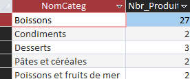 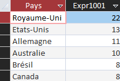4. La clientèle
Deux indicateurs permanents pour l'étude de sa clientèle sont :
- Les clients nantais qui achètent des produits d'Allemagne
- Les produits avec que des remises de 10% ou 20% ou aucune remise
- Le premier indicateur nous permettra de savoir quels sont les clients nantais qui achètent des produits d'Allemagne.
- Le deuxième indicateur permettra d'afficher les produits avec que des remises de 10%, 20% ou aucune.
Construction des requêtes
- Pour obtenir les clients nantais qui achètent des produits d'Allemagne, on sélectionne tous les clients venant de Nantes (en excluant "Verre à soi") et leur contact, qui doit être un fournisseur allemand. .
- Pour obtenir tous les produits qui ont uniquement béneficé de remises de 10% ou 20%, on sélectionne tous les produits qui ont eu des remises différentes de 10% (donc 0.1), de 20% (0.2) ou aucune (0) que l'on soustrait à la table Produits pour ne renvoyer que les produits qui ont bénéficier de remises de 10%, 20% ou aucune.
Requêtes SQL
SELECT DISTINCT
C.CodeCli, C.SocieteCli, C.ContactCli
FROM
((((SELECT
Client.*
FROM
Client
WHERE
Client.VilleCli = 'Nantes' AND Client.SocieteCLI <>
'Verre à soi') C
INNER JOIN Commande Co ON C.CodeCli = Co.CodeCli) INNER JOIN
DetailCommande DC ON Co.NoCom = DC.NoCom) INNER JOIN Produit P
ON DC.RefProd = P.RefProd) INNER JOIN
(SELECT
Fournisseur.NoFour
FROM
Fournisseur
WHERE
Fournisseur.Pays = 'Allemagne') F ON P.NoFour = F.NoFour;
SELECT DISTINCT
P.RefProd, P.NomProd
FROM
Produit P
WHERE
P.RefProd NOT IN
(SELECT DISTINCT
DC.RefProd
FROM
DetailCommande DC
WHERE DC.Remise <> 0.2 AND DC.Remise <> 0.1 AND DC.Remise <> 0);
Résultats
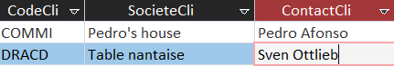 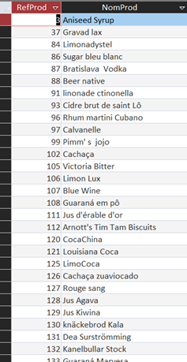Requêtes personnelles
Amina
Quels fournisseurs ont des produits non commandés (afficher les pays de ces fournisseurs) ?
L’intérêt de cette question pour Kdou c’est de tenter de minimiser l'empreinte carbone en évitant de produire beaucoup d'invendus et de polluer avec les transports d'une marchandise qui finira "gâché"
UniteStock correspond au nombre de stock vendus pour un produit, or on veut afficher les situations où il n’y a aucun produit vendus, donc les situations où la colonne UniteStock situé dans la table Produit soit égal à zéro. Soit en SQL : Produit.UniteStock = 0; Les tables qui nous intéresse sont la table Fournisseur et Produit On veut choisir des colonnes pertinentes pour les associés donc on prend les colonnes : Societe, Contact, Pays Pour la table Produit, on veut la colonne qui concerne le nom des produits (NomProd), la colonne UniteStock Et pour la logique du code SQL il faut sélectionner une colonne qui lie les deux tables, soit NoFour. Pour lier ces informations on va utiliser un INNER JOIN
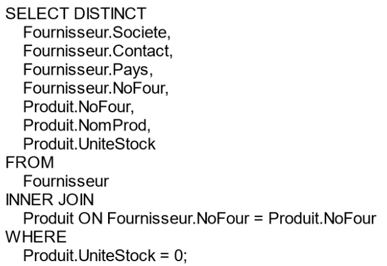 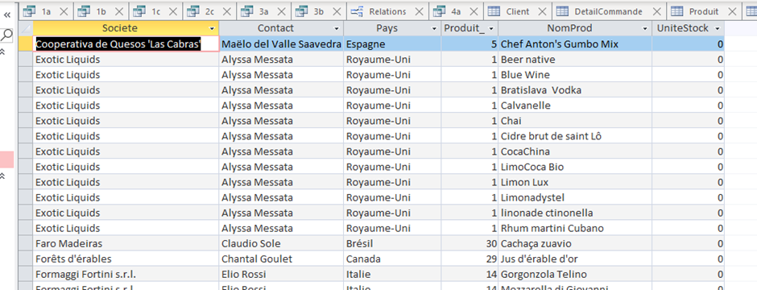Inès
Quels sont les produits de la catégorie desserts les moins vendus ?
Cette requête permettra à KDou de se renseigner sur les produits les moins vendus de la catégorie desserts et d’ajuster voir changer sa marchandise pour qu’elle attire plus de clients.
Pour réaliser la requête SQL, on a besoin de savoir quels sont les produits de la catégorie desserts. Pour cela, on doit sélectionner les produits provenant de la catégorie desserts. Une intersection entre la table Produits et Catégorie est donc nécessaire. Ensuite, nous aurons besoin d’accéder au commande et de vérifier quels produits ont été achetés et ceux qui ne l’ont pas été. Il faudra d’abord faire une jointure avec la table Détail Commande et retirer tous les produits où la clé étrangère n’est pas présente. Cela nous renverra à tous les produits achetés. Pour connaître les produits les plus achetés, il suffira de faire un group by ainsi qu’un count. Dans le cas de notre requête, nous voulons connaître les produits les moins vendus. Il nous faudra donc trier les ventes par ordre croissant.
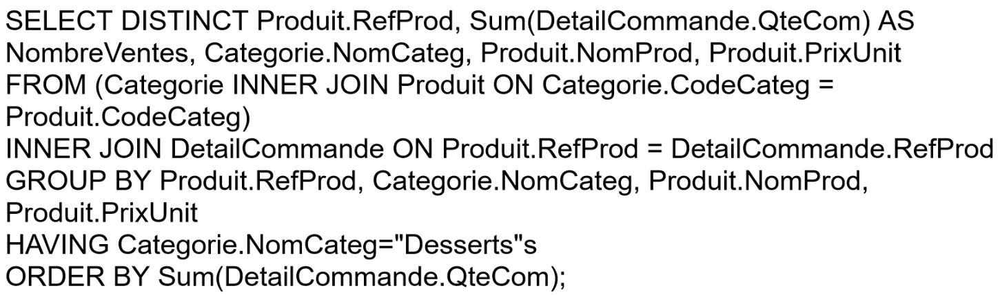 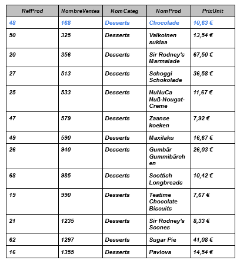François-Xavier
Quel est chiffre d'affaires généré par l’ensemble de son catalogue de produits ? (en fonction de l’origine des produits)
Cette requête permettra à KDou de se renseigner sur l’origine des produits générant les plus gros chiffre d’affaires, permettant ainsi à l’entreprise d’élargir son offre de produit en ciblant mieux les attentes de ses clients.
Cette requête est très simple, tout d’abord il faut sélectionner les tables dont nous aurons besoin, c'est-à-dire la table Fournisseur pour obtenir l’origine des produits et la table DetailCommande pour obtenir le chiffre d’affaires qu’il ont généré. Pour faire la liaison entre ces deux tables, il est important d’utiliser la table produit. Ensuite il faut regrouper les données par pays. Pour cela nous utilisons la fonction GROUP BY. Maintenant il faut obtenir le chiffre d’affaires. Pour cela nous utilisons la même formule qui a été utilisée dans la question 1.c. Nous affichons aussi les pays afin de savoir quel pays a généré quel CA. Enfin nous renommons la colonne contenant les chiffres d’affaires et nous trions la table dans l’ordre décroissant des chiffres d’affaires afin de faciliter sa lecture et son exploitation.
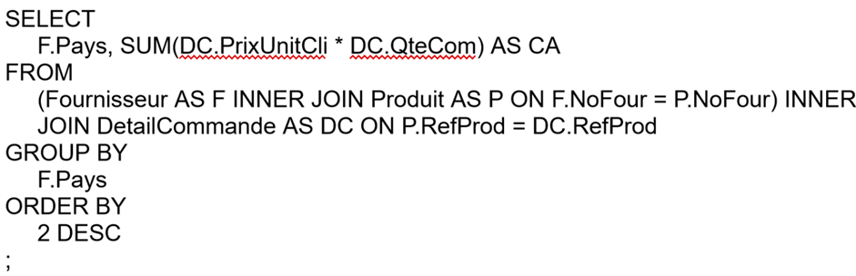 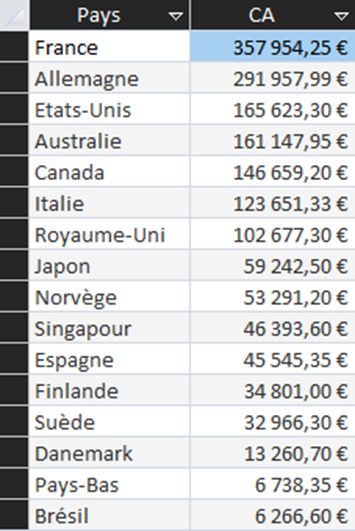